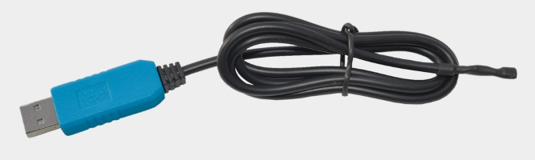

USB Thermometer
Digital thermometer probe with USB connection, based on DS18B20 1–wire probe and PL-2303TA serial interface, provides 9-bit to 12-bit temperature measurements. Each thermometer has an unique 64-bit serial code stored inside ROM.
Perfect solution for monitoring air temperature at home, in a greenhouse or in a server room. Measurements are more accurate since the probe is not in the same housing as the USB plug. It is also possible to make a probe waterproof by putting it inside a stainless steel tube or put it on longer cable. Desipe probe's wide measuring range it is advisable its usage between –20 and +85 degrees Celsius. Unit of readout value (Celsius or Fahrenheit) depends on software used.
Technical data
- Measuring range: –55 °C — +125 °C (–67 °F — +257 °F)
- Accuracy: 0.5 °C (0.9 °F) (from –10 °C to +85 °C), 2 °C otherwise
- Resolution: 0.0625 °C (0.1125 °F) at 12-bit
- Data record frequency: above 750 milliseconds
- Cable length (between plug and probe): approximate 82 cm
- Works under Linux™ (Debian, Ubuntu, Openwrt/LEDE etc.) and Windows® XP SP2, Vista, 7, 8, 8.1 and 10. CPU architecture independent: works also on MIPS and ARM.
- Supported by dedicated open source software (released under MIT license) at github.com/usbtemp (C, C++, C#, node.js, python3 examples) and wide range of third-party tools and monitoring utilities, e.g. Digitemp, owfs, LogTemp.
More information
- Product sheet (pdf) – includes usage
- Driver and software installation guide (pdf)
- LogTemp setup (pdf)
Drivers and software
- Prolific (PL2303) driver for Windows (from prolific.com.tw)
- Maxim 1-wire driver 32-bit, 64-bit (for Windows)
- digitemp.exe (v1.7) (from digitemp.com)
- Maxim 1-wire viewer
- LogTemp (v2.25) (needs Maxim 1-wire driver) (from mrsoft.fi)
- usbtemp-cli binary release (command line)
Picture of normal version
 See picture of waterproof versionSupport
Technical support is available on mail support@[this domain].

Buy
Thermometer could be ordered securely online from 13.8 USD (11.5 EUR) with PayPal. Order will be shipped as registered mail (with tracking). Shipping is flat rate (does not depend on the number of thermometers ordered).